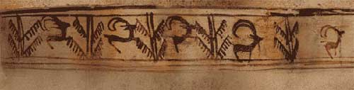

Prima animație din lume
În anii 70 o echipă de arheologi italieni a descoperit într-un mormânt de pe teritoriul Iranului (în Shahr-e Sukhteh, mai exact), un vas datând de acum 5.200 de ani.
Un vas al cărui ornament “desfășurat” arată astfel.

📜 Istorie 📜
Nu mică a fost surpriza arheologilor când au realizată că, prin rotirea vasului, capra desenată de artistul anonim acum mai bine de 5 milenii “prinde viață”.
Primul film animat
Primul film animat se numeșteFantasmagorie și a fost creat în anul 1908 de către Émile Cohl (prin desenarea manuală a fiecărui cadru, pentru ca apoi, toate cele 700 de desene să fie filmate). Filmul constă în mare parte dintr-un omuleț care se mișcă și întâlnește tot felul de obiecte care se transformă, cum ar fi o sticlă de vin care se transformă într-o floare care devine un elefant. Există și secțiuni de acțiune live în care mâinile animatorului intră în scenă. Personajul principal este desenat de mâna artistului pe cameră, iar personajele principale sunt un clovn și un domn. Alte personaje includ o femeie într-un cinematograf care poartă o pălărie mare cu pene gigantice și un om puternic.
Ideea filmului
Filmul a fost creat desenând fiecare cadru pe hârtie și apoi filmând fiecare cadru pe film negativ, ceea ce a dat imaginii un aspect de tablă. Era alcătuit din 700 de desene, fiecare dintre ele expusă de două ori (animat „pe doi”), ceea ce duce la o durată de rulare de aproape două minute. A împrumutat de la J. Stuart Blackton, efectul de linie de cretă; filmând linii negre pe hârtie albă, apoi inversând negativul pentru a-l face să arate ca creta albă pe o tablă neagră. Blackton și Cohl au împrumutat, de asemenea, câteva tehnici de la Georges Méliès, cum ar fi trucul opririi.
Click Here